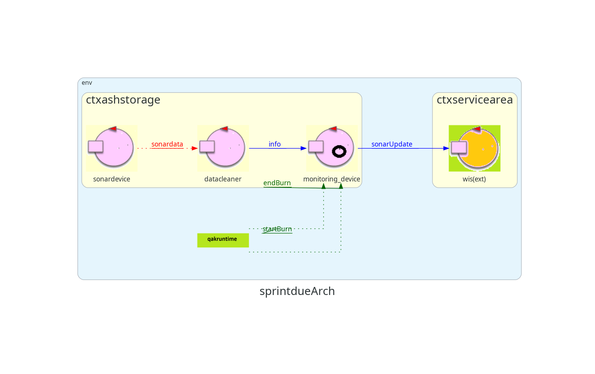
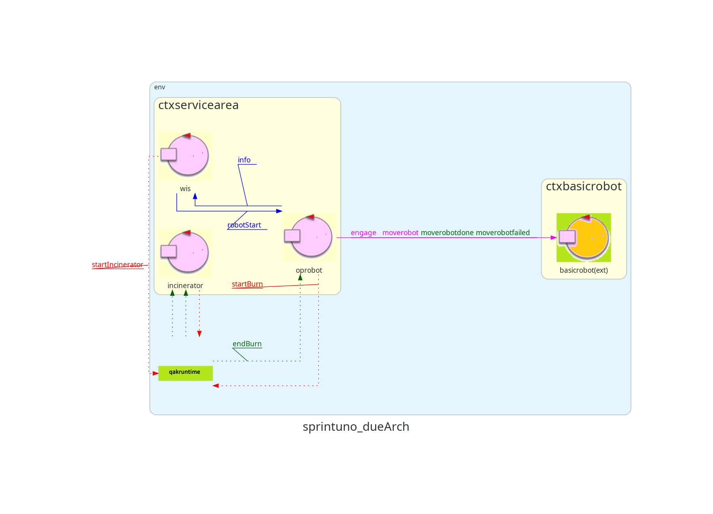

Introduction
Richiesta del committente
Analisi dei Requisiti
Requisiti
Architettura logica prodotta all'interno dello
sprint2:


Goal Dello Sprint 3
Affrontare l'analisi dei problemi introdotti dai requisiti R5, generare un'architettura logica, un modello
eseguibile e dei test automatizzati.
Analisi dei requisiti
- R5.1: Visualizzare lo stato del WasteStorage.
- R5.2: Visualizzare lo stato dell'AshStorage.
- R5.3: Visualizzare lo stato dell'inceneritore.
- R5.4: Visualizzare lo stato del OpRobot.
Dissertazione:
Non è specificato in che modo la GUI debba ottenere queste informazioni dal sistema, e ci sono diverse alternative possibili:
- La GUI potrebbe eseguire un polling periodico sui vari componenti per rilevare eventuali cambiamenti.
- Potrebbe ricevere notifiche sui cambiamenti di stato da parte di un attore dedicato.
- Oppure potrebbe ricevere direttamente dal sistema WIS le informazioni aggiornate.
Attualmente, il sistema WIS dispone già di tutte le informazioni necessarie per aggiornare lo stato della GUI.
Poiche' il linguaggio di modellazione non permette l'osservazione tra due nodi remoti, una possibilita' potrebbe essere
l'inserimento di un nuovo attore
opEventBridge con il compito di osservare i cambi di stato del
opRobot ed inviare informazioni a SSGUI.
Considerando il costo contenuto per una modifica all'attore
WIS,
non si reputa vantaggiosa l'aggiunta di nuovo componente per questo fine, in quanto non è un requisito richiesto dal committente.
Per questo quindi si valuta di effettuare il deploy della GUI nello stesso nodo della ServiceArea, modificando
WIS
in modo tale da inviare informazioni alla dashboard riguardo i cambi di stato del opRobot.
Dai requisiti non si evince che la GUI sia una pagina web ma per semplicita' di sviluppo ed utilizzo si e' scelto l'impiego di un approccio
simil Facade, utilizzando il framework SpringBoot.
Problematiche
- Come avviene la comunicazione tra WIS e SSGUI?
-
Dissertazione:
La comunicazione avviene tramite l’aggiornamento delle risorse relative alle seguenti variabili:
Ws_status e
As_status di WIS, e
MentalState e
RobotState di opRobot, osservate da WIS.
Queste variabili gestiscono lo stato dei componenti richiesti, ad eccezione dello stato dell’inceneritore, che sarà aggiornato separatamente attraverso
la variabile MentalState. Ricordiamo la differenze tra le variabili RobotState e MentalState: la prima
rappresenta lo stato di occupazione (working/idle) e la seconda rappresenta l'attività che sta svolgendo.
Tutte queste informazioni sono monitorate e osservate da CoapObserver.
Architettura Logica
Progettazione
Deploy
docker run -ti -p 8090:8090 -p 8091:8091 --rm docker.io/natbodocker/virtualrobotdisi23:1.0
cd ./basicrobot24-1.0/bin/
./basicrobot24
Per la distribuzione della Service Area:
tar -xvf /your/path/to/TemaFinale2024_ISS/sprint1/build/distributions/sprintuno-1.0.tar
./sprintuno-1.0/bin/sprintuno.bat
Per la distribuzione dell'ambiente del Monitoring Device sul Raspberry:
tar -xvf /your/path/to/TemaFinale2024_ISS/sprint2/build/distributions/sprintdue-1.0.tar
./sprintdue-1.0/bin/sprintdue.bat
Test Unit
Test Funzionale Monitoring Device
Test 1
Nel test l'Inceneritor modifica il suo stato, iniziando la fase di combustione.
- Verifichiamo che il LED si accenda.
✅ Il test e' superato se la variabile booleana LEDON viene resa true.
Test 2
Nel test l'Inceneritor modifica il suo stato, terminando la fase di combustione.
- Verifichiamo che il LED si spenga.
✅ Il test e' superato se la variabile booleana LEDOFF viene resa true.
Test 3
Il test simula che l'AshStorage sia pieno inoltrando al Monitoring Device un messaggio in cui venga superato il valore soglia di polvere.
- Verifichiamo che il LED lampeggi.
✅ Il test e' superato se la variabile booleana LEDBLINK viene resa true.
Test JUnit LED
Test 4
Il test simula che l'AshStorage sia pieno inoltrando al Wis un messaggio in cui venga superato il valore soglia di polvere.
- Verifichiamo che l'OpRobot non inizi un ciclo di lavoro.
✅ Il test e' superato se il test_observer ha osservato un messaggio info(Wis,As_Status,full),
terminando l'esecuzione con l'exit code "30". Questa condizione implica che l'OpRobot non venga avviato, come gia' testato in nello
sprint1.
Test JUnit Funzionale
Pianificazione del lavoro
- Sprint 3
- Analisi del problema relativo al requisito R5